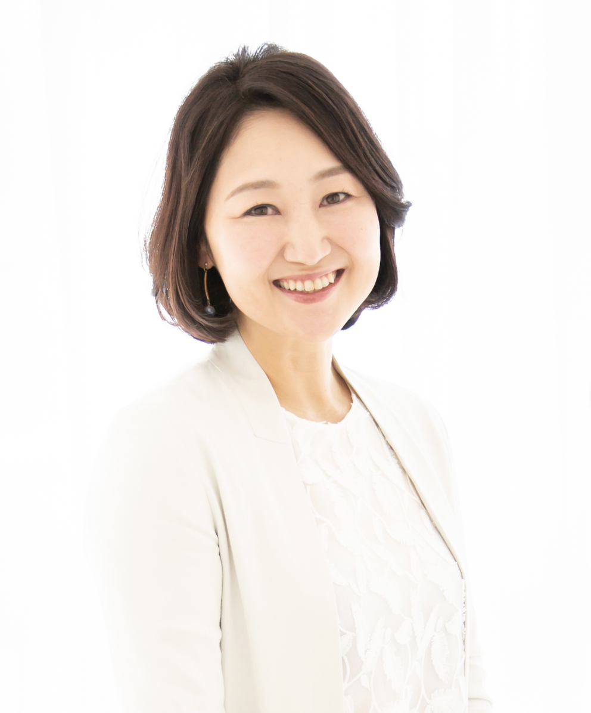

0〜3歳の子を持つパパ・ママへ ／ 完全無料・個別説明会
子育ての「なんでうまくいかないんだろう」は、
あなたのせいじゃない。
愛着タイプを知り、脳科学に基づいた関わり方を
個別でお伝えします。
PROBLEM
育児書を読んでも不安が消えない。何が正解かわからない
つい感情的に怒ってしまう。毎回「またやった」と落ち込む
子どもが言うことを聞かない。どう関わればいいかわからない
夫婦で子育ての方針がぶつかる。話し合いが噛み合わない
仕事と育児を両立していて、子どもとの時間が少ない罪悪感
AI時代に我が子に何を身につけさせればいいかわからない
これらの迷いや感情反応の多くは、「愛着バグ」と呼ばれる
自分自身の無意識のパターンが原因です。
子どもへの向き合い方の前に、まず自分を知ること。
それが子育てを変える最短ルートです。
ATTACHMENT THEORY
扁桃体が落ち着く
不安・恐怖の反応が減り、挑戦できるようになる
前頭前野が育つ
思考・判断・感情調整の力が育っていく
海馬が活性化
記憶・学習・社会性がぐんぐん伸びる
ATTACHMENT TYPE
育児の中で起こる感情反応や判断の多くは、自分自身の「愛着傾向」から来ています。タイプを知ることで、感情的な対応ではなく戦略的な関わりを選べるようになります。
Secure
安定型
約30〜35%
安心の土台が整っている。感情の波に巻き込まれにくく、子どもを受け止めながら見守れる。
Anxious
不安型
約40〜45%
日本で最多
愛情深いが反応に敏感。過干渉や心配のしすぎになりやすい。人の気持ちに振り回されがち。
Avoidant
回避型
約15〜20%
自立心が強いが親密さに慎重。感情表現が苦手で、距離を取りがちになる。
Disorganized
混合型
約5〜10%
近づきたいのに怖い、矛盾した反応が起きやすい。感情の波が突然大きくなることがある。
個別説明会では、あなたの愛着タイプ診断の結果フィードバックも行います。
まず「自分の愛着タイプ」を知るところから始めましょう
無料個別説明会を予約する →TESTIMONIALS
佐藤 美咲さん（仮名）
Before「すごいね」と育てられた私は、いつも「すごくないといけない」と必死で苦しかった。子どもへの関わり方はこれでいいのか、ずっと迷っていました。
After子どもへの声かけは「評価」より、行動の事実を伝えることが大切だと学びました。「自分で寝返りできたね」など、具体的な言葉で伝えることで、子どもの小さな成長に気づけるようになりました。
高橋 由奈さん（仮名）
Before子どもとの触れ合い方に自信がなく、「一人で遊んでもらう時間に寂しくならないか」とずっと不安でした。
After自分が不安型、夫が混合型とわかり、夫のしんどさにも目を向けられるように。子どもの行動に「意味がある」と理解できるようになり、息子の慎重な性格が見えてきました。
中村 彩乃さん（仮名）
Before初めての育児で楽しさと同時に「これでいいのかな」という不安がずっとありました。
Afterまず自分のタイプを知ることで、子どもとの向き合い方に「軸」ができました。理論と実践がつながり、娘との関わりが深くなったと感じています。
CURRICULUM
全6回・オンラインライブ形式。録画視聴あり。日常の関わりをそのまま学びに変える設計なので、多忙な方ほど続けられます。
愛着タイプ診断で自分のパターンを可視化。感情反応・思考のクセを理解し、子育てのOSを整える。
発達の全体像と脳の仕組みを学ぶ。子どもの行動には意味があると理解できるようになり、不安が減る。
言葉がけ・環境づくり・ふれあい遊びなど、日常で使える具体的な関わり方を習得する。
これからの時代を生き抜く「人間力」を育てるために何が必要か。自己肯定感と行動量の育て方を知る。
ポケットイクモ（1年分）
1日3分で学べる育脳動画教材約1,000本。日常の中で繰り返し学び直せる。
AIジャーナリング（3ヶ月分）
学びを定着させる振り返りシステム。自己理解が深まる。
育脳玩具セット
五感と脳を育てる玩具をお届け。講座と連動した実践を自宅で。
INSTRUCTOR

株式会社イクリプス 代表取締役
子育てMBA 開発者 ／ イクモ保育園 創設者
奥本 みずほ
武蔵野美術大学在学中にデザイン会社を設立し、（一社）日本WEBデザイナーズ協会会長に就任。出産を機に事業を譲渡し、子育てと向き合う中で心理学・脳科学・愛着理論を徹底研究。脳科学者と共同で「育脳保育」を取り入れたイクモ保育園を設立。その保育ノウハウを全国の親へ届けるため、子育てMBAを開発。保護者満足度2年連続100%を達成。
監修
久保田 競 先生
京都大学名誉教授・医学博士・脳科学者
「ワーキングメモリー」を発見した前頭葉研究の第一人者。2011年に瑞宝中綬章受章。妻は「脳科学おばあちゃん」として知られる久保田カヨ子先生。
FAQ
オンラインビデオ通話にて実施します。全国どこからでもご参加いただけます。所要時間は60〜90分程度を予定しています。
完全無料です。子育てMBAへの売り込みも一切ありません。まず愛着タイプ診断の結果をお伝えし、現在の子育てのお悩みをヒアリングします。
主に0〜3歳のお子さまを持つ親御さんを対象としています。ただし、愛着理論・脳科学のアプローチはより大きなお子さまにも有効なため、お気軽にご相談ください。
子育てMBAは特別な時間を作るものではなく、日常の関わりそのものを学びに変える設計です。個別説明会も日程は柔軟に調整できます。まずはご相談ください。
もちろんです。夫婦それぞれの愛着タイプを知ることで、子育ての方針がぶつかる理由が明確になり、より建設的なコミュニケーションができるようになります。
FREE CONSULTATION
愛着タイプ診断の個別フィードバックと、子育てMBAの詳細をお伝えします。
売り込みは一切ありません。まずは気軽にどうぞ。